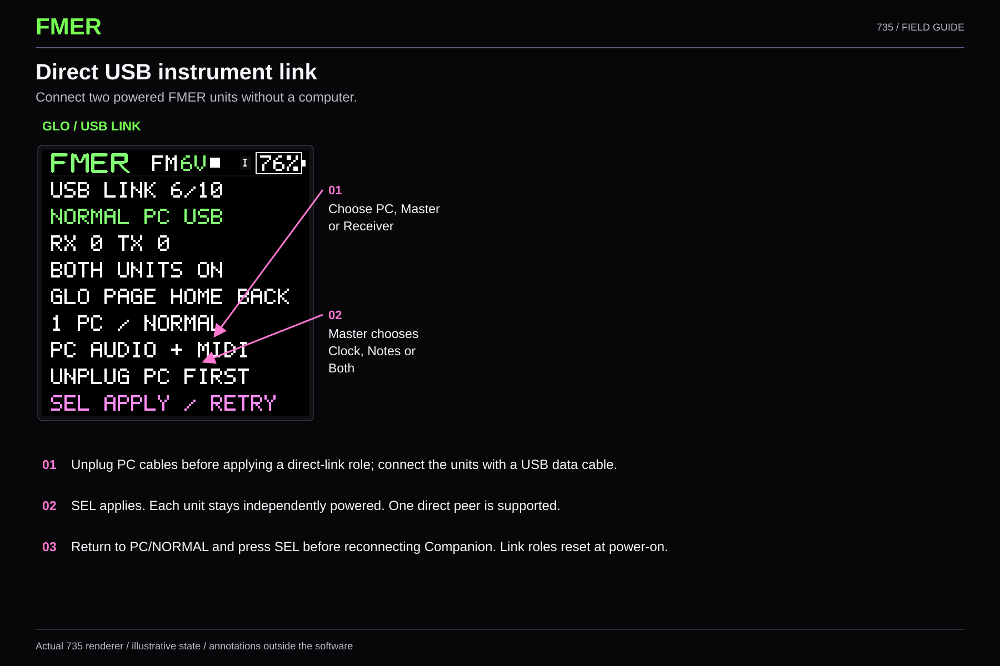
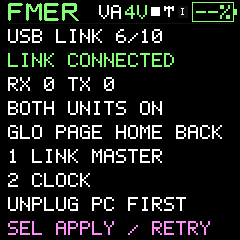
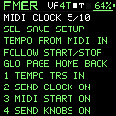

Performance
Direct USB MIDI link
Direct single-peer USB MIDI; tested on Malachite and Citrine with a USB-C data cable.
Power both FMER731 or733 units from their batteries. Unplug their PC cables before selecting LINK MASTER on one unit, and LINK RECEIVER on the other, in GLO / USB LINK. K1 selects the role; on the master K2 selects Clock, Notes or Clock + Notes. SEL applies. Connect the units using the USB-C data cable.
The master owns USB enumeration and the internal tempo. Receiver follows USB MIDI clock and Start/Stop; existing patterns, instruments and channel rules remain. Clock alone runs each unit's own patterns. Notes sends generated or played notes; Clock + Notes enables both. Avoid playing receiver local patterns plus incoming matching notes unless intentionally layering.
This is one direct MIDI peer, not USB audio, a hub or a Bluetooth network. The host accepts the FMER test USB identity and validates MIDI descriptors. It does not send power-control or update commands. Each unit must remain powered. A direct C-to-C Clock test on Citrine and Malachite running731 successfully started and stopped both units; retained counters match 791 clocks sent and received plus one Start/Stop pair, with no new audio or MIDI fault counters. Returning the master to PC / NORMAL restored its prior MIDI settings. The owner subsequently reported successful notes and sequencer/arp operation in both directions on these units. Captured counters are retained in the 733 release report; full-session timing and other cable compatibility are not established by that report.
LINK CONNECTED means MIDI endpoints have enumerated. Errors retain counters for later PC diagnosis. SEL retries after a failed link. To return to the companion choose PC / NORMAL and SEL, then reconnect to the PC. Reconnecting the cable alone does not leave host mode. For diagnosis, return to PC / NORMAL without rebooting so the link counters remain available. A power cycle always restores ordinary PC USB. Link role is not saved. PC / NORMAL restores MIDI settings captured before the session; saving MIDI settings while a link is active explicitly persists those settings.
All voice MIDI channels, velocity, release, controller, sustain, pitch bend and bank/program changes use existing MIDI behavior. The master does not echo received messages. Peer SysEx/update traffic is excluded. A single instrument receives its configured channel; four tracks use channels1..4 by default. See MIDI reference for complete mappings.


